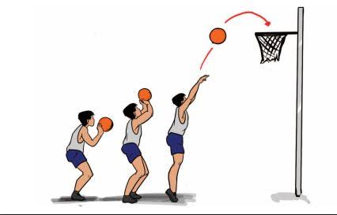

Basic basket apa saja ya?
Nah kalian sudah tau sedikit informasi tentang basket bukan? Selanjutnya kita akan belajar apa saja basic dari basket!
Jadi basic drill atau basic skill untuk pemula dalam basket itu ada 3 , mau tau apa saja?
Berikut 3 basic basket yang harus kamu kuasai!
1.Teknik Dribbling/Dribble
Dribbling adalah salah satu teknik dasar untuk bermain bola basket, teknik ini wajib dikuasai karena dribble memungkinkan pemain untuk bergerak di lapangan, menghindari pemain lawan, dan menciptakan peluang mencetak poin. Dribble adalah teknik dasar yang penting untuk mengontrol bola sambil bergerak, memungkinkan pemain untuk mendekati ring, melewati lawan, dan menciptakan ruang untuk tembakan atau umpan.

2.Teknik Shooting
Shooting atau menembak dalam dunia basket adalah senjata mematikan untuk mencapai kemenangan, tentu tak mudah tapi juga tidak mustahil jika berlatih secara konsisten. Shooting merupakan gerakan memasukkan bola langsung ke dalam ring/keranjang lawan. Shooting disebut sebagai gerakan inti dalam permainan bola basket lantaran digunakan sebagai ajang untuk mencetak poin. Gerakan ini dapat dilakukan menggunakan kedua tangan maupun satu tangan saja.
3.Teknik Passing
Teknik ini juga tidak kalah penting diantara teknik lain , sebab teknik ini dapat melakukan pergerakan secara efisien dan cepat. Passing merupakan teknik mengoper bola kepada rekan satu tim. Tujuannya adalah untuk memindahkan bola dari satu pemain ke pemain lain dalam satu tim untuk menciptakan peluang mencetak poin atau mengatur serangan. Passing juga merupakan cara untuk mengatasi tekanan dari tim lawan dan mempertahankan bola.

Selain basic skill apalagi sih yang harus dipelajari?
Nahhh kalau kalian sudah mahir menguasai basic skill basket , kita akan masuk ke sesi pola offense dan deffense , pengetahuan offense dan deffense ini juga tidak kalah penting , karena dalam permainan kita butuh yang namanya strategi agar permainan berjalan dengan lancar dan seperti apa yang kita harapkan yaitu kemenangan.
Offense (menyerang)
Dalam bola basket, offense (penyerangan) adalah usaha tim untuk mencetak poin dengan memasukkan bola ke dalam keranjang lawan. Ini melibatkan berbagai strategi dan taktik untuk melewati pertahanan lawan dan menciptakan peluang mencetak angka.
Kalau kamu ingin tahu lebih lanjut klik link dibawah ini :
Belajar disini yuk!Defense (Pertahanan)
Dalam bola basket, "defense" atau pertahanan adalah upaya tim untuk mencegah tim lawan mencetak poin. Ini melibatkan berbagai strategi dan taktik untuk menjaga pemain lawan, merebut bola, dan memblokir tembakan. Pertahanan adalah kunci untuk memenangkan pertandingan, karena mencegah lawan mencetak angka.
Penasaran apa saja pola defense? Ayoo kita belajar , klik link berikut : YUKKK!!